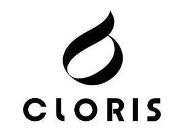

Trade Mark Journal No.2025/025 20 June 2025
UK00004180821 28 March 2025 (9,10,11,20,21,28)

- Class 9
- Scales; Scales with body mass analysers; Body fat scales for household use; Electrical weighing apparatus; Protective and safety equipment; Life-saving apparatus and equipment; Measurement apparatus; Air analysis apparatus; Apparatus and instruments for recording of data; Scanners; Printers; Sensors, detectors and monitoring instruments; Headphones; Contact lens cases; Computer peripheral devices; Fire fighting apparatus; Diving apparatus; Software for mobile phones; Photographic equipment; Projectors.
- Class 10
- Medical apparatus and devices; Apparatus for medical rehabilitation; Medical ultrasound apparatus; Fumigation apparatus for medical purposes; Instruments for massage; Massage chairs with built-in massage apparatus; Esthetic massage apparatus; Foot massage apparatus; Heat wrap massage apparatus; Massage beds for medical purposes; Glucometers; Sphygmotensiometers; Hematimeters; Acupuncture equipment; Apparatus for orthopaedic purposes; Therapeutic and assistive devices adapted for the disabled; Sexual activity apparatus, devices and articles; Cervical pillows for medical use; Apparatus for nursing infants; Haematology analysers.
- Class 11
- Heating apparatus; Air purifying apparatus; Electric foot baths; Air treatment equipment; Cookers; Microwave ovens; Disinfectant apparatus; Cooking apparatus and installations; Apparatus and installations for heating; Drying apparatus and installations; Lighting apparatus and installations; Apparatus and installations for ventilating; Sanitary installations and apparatus; Refrigerating appliances and installations; Apparatus and installations for water supply; Humidifiers; Electrical hair driers; Electric fans; Coffee machines; Footwarmers, electric or non-electric.
- Class 20
- Massage tables; Lounge chairs for cosmetic treatments; Chairs; Furniture; Outdoor furniture; Furniture for kitchens; Trolleys [furniture]; Furniture for offices; Inflatable furniture; Furniture for camping; Rocking chairs; Stools; Beds; Beds, bedding, mattresses, pillows and cushions; Folding beds; Pillows; Fitted fabric furniture covers; Tool boxes [furniture]; Wall-mounted tool racks; Containers, not of metal, for storage or transport.
- Class 21
- Electric toothbrushes; Holloware; Tableware; Cooking pots; Cooking utensils for barbecue use; Cooking utensils, non-electric; Ultrasonic mosquito repellers; Ultrasonic bird repellers; Electric lint removers; Household or kitchen utensils; Portable cooking kits for outdoor use; Cutlery rests; Household or kitchen containers; Bento boxes; Cleaning articles; Drinking receptacles; Hand-operated grinders; Combs; Baby bathtubs; Fly swatters.
- Class 28
- Sports training apparatus; Fishing equipment; Sports equipment; Body protectors for sports use; Rehabilitation apparatus (Body -); Swimming equipment; Trampolines; Toys; Toys, games, and playthings; Toy sporting apparatus; Apparatus for games; Sporting articles and equipment; Gymnastic and sporting articles; Fitness exercise machines; Waist protectors for athletic use; Kneeboards; Surfboards; Ski boards; Golf training aids; Nets for sports.
Di Tu Health Technology (Shanghai) Co., Ltd.
Representative: IPP Master Limited